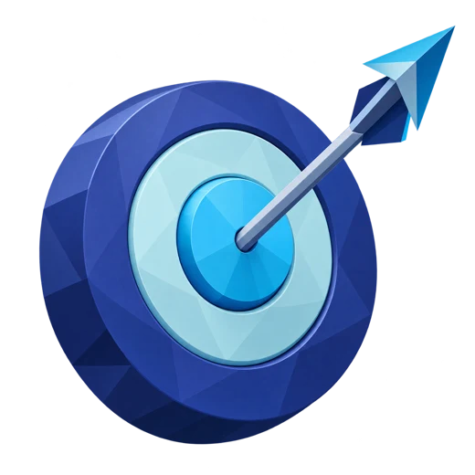
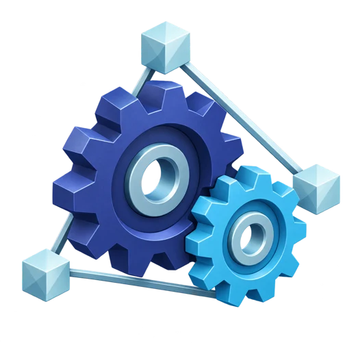

L’application marchait, mais elle exposait nos clients et coûtait cher à faire évoluer. Elle est maintenant sûre et prête pour la suite, sans rien changer pour nos clients.
Une entreprise cliente pouvait lire les justificatifs d’une autre : perte de confiance, données personnelles exposées, contrats B2B en jeu. 4 failles critiques sur 46 constats.
Une isolation des clients garantie par la base, une architecture en modules et des e-mails fiables même si le serveur mail tombe. Aucun client à réécrire : l’API ne change pas.
Risque critique éliminé : 12 failles critiques et élevées corrigées, prouvées par 620 tests. Des évolutions plus rapides et moins risquées : une fonctionnalité complète en un prompt.

Classés par impact métier × facilité d’exploitation, tous rejoués dans l’app.
Rôles usurpables, double décision acceptée, OCR qui sature le serveur, chemins serveur exposés.
Un manager ouvre le justificatif d’un salarié d’une autre entreprise.
L’app se connecte en superuser : l’isolation par entreprise ne s’applique jamais.
?sort= exécute du SQL, avec les droits superuser.
Qui lit le dépôt peut fabriquer une session RH de n’importe quelle entreprise.
Et pour l’utilisateur : le salarié n’est jamais prévenu de la décision (e-mails codés, jamais envoyés), et la note d’un employé sans manager n’a aucun validateur.
La couche hexagonale existait, mais personne ne l’importait.
règles d’accès recopiées, une par route
filet dans la base : l’app s’y connecte en superuser
e-mail envoyé : les notifications ne sont jamais appelées
Trois besoins tirés de l’audit : isoler les clients, ne rien casser chez eux, prévenir sans bloquer.
| Option | Apport | Limite |
|---|---|---|
| A · Monolithe en couches nettoyé | Léger. | Règles d’accès toujours éparpillées. |
| B · Monolithe modulaire hexagonal | Frontières nettes, métier testable. | Un serveur mail en panne bloque la validation. |
| C · B + file d’e-mails ✔ | Répond aux 3 besoins. | Un process de plus à exploiter (worker). |
| D · Microservices | Déploiement indépendant. | Réseau et exploitation ×N, pour aucun besoin de charge. |
Chaque correction est tenue par un test qui échouerait si le défaut revenait.
| Faille | Correction | Preuve (test) |
|---|---|---|
| Reçus d’une autre entreprise | Accès vérifié par le module, puis par la base | chaque rôle, autre entreprise → 404 |
| Filet de la base désactivé | Rôle applicatif soumis à l’isolation | sans entreprise, rien n’est visible |
| Injection dans le tri | Liste blanche des colonnes | ?sort= inconnu → tri par défaut |
| Secret dans le code | Secret obligatoire à l’environnement | sans secret, l’app refuse de démarrer |
Moyens et faibles 17 corrigés sur 34 (11 moyens, 6 faibles). Les 15 écartés le sont pour une raison écrite : contrat, simple validation, fonctionnalité ou infrastructure.
Limite assumée L’OCR reste synchrone : le rendre asynchrone changerait l’API. Risque atténué (taille et concurrence plafonnées, annexe 16).
critiques et élevés corrigés · 29 défauts au total
parcours E2E en échec : l’app d’origine en ratait 10 sur 37, la nôtre passe 37/37
des lignes du cœur métier et de l’API, par 620 tests. Sonar, sur tout src/ : 75 %, l’écart étant l’interface testée en E2E.
Chaque outil ferme un risque précis : l’agent intègre, il n’improvise pas.
Architecture, règles et commandes, chargés à chaque session.
Évite : du code posé au mauvais endroitRecette TDD en 10 étapes : ajouter-une-fonctionnalite.
Sous-agent revue-architecture sur le diff.
npm run verify : lint, types, depcruise, 620 tests.
Architecture détaillée, méthode d’audit, gravité, couverture, moyens et faibles, ADR 0002, OCR.

mail_outbox.Avant de toucher au code : comprendre, rejouer, mesurer, figer, puis classer.
Lecture des routes, de l’authentification et des migrations. Schéma as-is.
App lancée en local, parcourue dans un vrai navigateur pour chaque rôle ; API rejouée avec le cookie réel de chaque rôle.
k6 sur 15 000 notes (169 147 requêtes) ; SonarQube et couverture de départ.
+140 tests de caractérisation sur Postgres et S3 réels. Les tests [as-is] ont révélé 8 constats de plus.
Gravité = impact métier × facilité d’exploitation (annexe 12).
Même impact possible ; ce qui les sépare, c’est ce qu’il faut pour l’exploiter.
N’importe quel utilisateur, en une requête, sur toutes les entreprises ; ou la défense elle-même désactivée.
Il faut un rôle, un moment ou une charge particulière, ou l’impact reste indirect.
Moyen : impact métier net, sans fuite (ex. salarié jamais prévenu, note sans validateur). Faible : correction souhaitable (affichage, validations fines).
Même suite de tests, deux périmètres : l’écart vient de ce que Vitest ne mesure pas.
| Zone | Testée par | Couverture |
|---|---|---|
| Cœur métier, API, server actions modules/, shared/, app/api/, app/actions/ | Vitest : 620 tests, Postgres et S3 réels | 99,8 % des lignes · 97,4 % des branches · 100 % des fonctions |
| Pages et composants React 7 pages, 4 composants | Playwright : 37 parcours E2E | non mesurée, comptée à 0 % par Sonar |
| Authentification lib/auth.ts, proxy.ts, route Auth.js | Playwright : vraies sessions | non mesurée |
| Worker d’e-mails worker/mail-worker.ts | Vitest (intégration) et E2E Mailpit | testé, hors du périmètre mesuré |
Rien n’est oublié : chaque constat est corrigé ou écarté pour une raison écrite.
| Gravité | Corrigés | Écartés, et pourquoi |
|---|---|---|
| Moyen · 20 | 11 corrigés, dont e-mails (F15), notes sans validateur (F14, F33) + 1 déjà traité (F35), 1 partiel (F21) | 7 : pagination = contrat (F18) ; validations (F13, F32, F40) ; débit = infrastructure (F20) ; identité d’entreprise à concevoir (F6, F7) |
| Faible · 14 | 6 corrigés | 8 : fonctionnalités manquantes (F8, F28, F38) ; validations (F37, F45) ; affichage (F29, F46) ; énumération des comptes (F36) |
Acceptée le 16/10/2026 · docs/adrs/0002-monolithe-modulaire-hexagonal.md
Routes qui portent le SQL et les règles d’accès, recopiées 7 fois ; couche hexagonale présente mais jamais branchée. Contrainte : ne pas casser l’API.
A couches nettoyées · B modulaire hexagonal · C B + flux asynchrone · D microservices
Modules expenses et iam (domain, application, ports, infrastructure) et shared/. Un module ne voit l’autre que par son index.ts, vérifié par dependency-cruiser. ApprovalPolicy seule décide qui valide ; la RLS n’assure que l’isolation entre entreprises.
Une règle métier écrite une fois ; une recette fixe pour ajouter une fonctionnalité.
Plus de fichiers. Une RH seule dans son entreprise n’a pas de validateur tant qu’une seconde RH n’existe pas (limite assumée).
La facturation ira dans src/modules/billing, avec un port PaymentProvider.
Le risque était la saturation (F17, F19), pas la lenteur : plafonnée sans toucher à l’API.
La suggestion renvoie montant et date dans sa réponse. En asynchrone : 202 puis une route de résultat, donc les clients existants cassent.
≈ 450 ms par reçu (k6), acceptable pour une saisie humaine.
ReceiptReader est un port : un adapter avec file d’attente remplace Tesseract sans toucher au métier.
| Avant | Après |
|---|---|
| Un moteur Tesseract créé puis détruit à chaque reçu (F17) | Moteurs créés une fois, réutilisés |
| Autant d’analyses que de requêtes simultanées | 2 analyses au plus en parallèle (OCR_MAX_CONCURRENCY), les autres attendent leur tour, 30 s au plus |
| Saturé : le serveur ralentit pour tout le monde | 503 + Retry-After : 5 s, « réessaie dans quelques secondes » ; ajouté au contrat |
| Aucune limite de taille (F19) | 10 Mio, corps coupé dès le dépassement, 400 sans analyse |
| OCR en échec | Suggestion vide : le salarié saisit à la main, rien ne bloque |